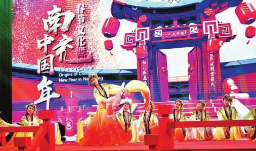
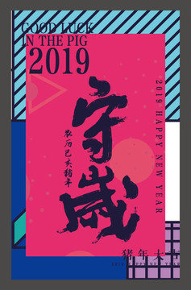
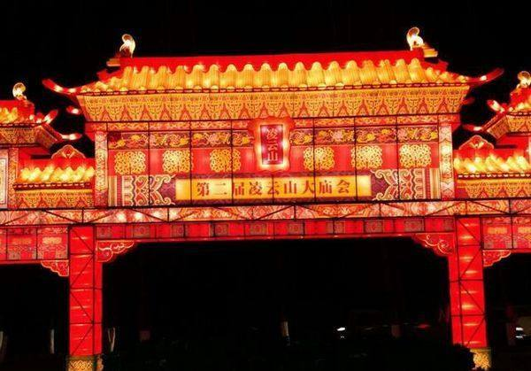

新年习俗

一年一度最重要的节日春节到来了，全国人民为欢欢喜喜过大年，都开始忙碌起来了，买年货，贴春联、贴门神、贴花、放鞭炮、扫尘、洗浴、祭灶、祭祖、守岁、拜年等各种各样的活动都开始了，而全国不同时期、不同地区、不同民族的习俗都不相同。四川人对农历新年极为重视。家家户户挂彩灯、贴门神，并在粮仓、家禽牲畜圈上贴写吉祥的语言，以示来年的丰收吉祥。有条件的客家乡镇从正月到二月要耍灯舞，灯的种类有龙灯、狮灯、蚌灯等，这是四川人在原籍的彩灯习俗流传至今。此外，还要举行大型庆典活动--舞龙，有彩龙、火龙、水龙、脱节龙和和上川龙之分。
团圆饭

“团圆饭”是过年中人们借助饮食活动来表达华夏民族群体文化心理的一种方式。“团圆饭”有着悠久的发展历史、厚重的文化积淀与广大华夏子孙后代的受众群体。吃团圆饭，是举国上下除夕之夜家家户户最为热闹欢快的时刻。大年夜，丰盛的年菜美食摆了满满的一桌，阖家团聚，围坐桌旁，人们共吃“团圆饭”，此时此刻，无论是老人、小孩、男人、女人，人人的脸上都洋溢着幸福的欢笑，心头的慰藉与充实感已经是难以言喻。人们既是在享受着满桌的佳肴盛馔，更是在享受着那份欢乐与喜庆的气氛。团圆饭”虽然是过年中的饮食活动，其实它已经超出了一般意义的“吃”的范畴，而上升为一种文化娱乐与精神审美活动。因此，我们说“团圆饭”首先是一个年节文化的载体，它承载的是数千年华夏民族“年文化”的文明积淀与文化蕴涵。
守岁

守岁的习俗，既有对如水逝去的岁月含惜别留恋之情，又有对来临的新年寄以美好希望之意。 守岁，就是在旧年的最后一天夜里不睡觉，熬夜迎接新一年到来的习俗，也叫除夕守岁，俗名“熬年”。 古时守岁有两种含义：年长者守岁为“辞旧岁”，有珍爱光阴的意思；年轻人守岁，是为延长父母寿命。自汉代以来，新旧年交替的时刻一般为夜半时分。在年30晚上，一家人围坐在一起，开开心心，团团圆圆。小孩子还会得到压岁钱，带着长辈最真的祝福。
庙会

庙会源自古代的宗庙制度，《礼记》中记载：春秋时期，孔子的弟子子贡观摩为酬谢农神而举办的祭祀活动，并评价说“一国之人皆若狂”。为了祈求神灵或先祖保佑，人们选择在宫殿中通过祭祀或供奉的方式与之交流沟通，并辅之以精彩的歌舞，以达到渲染气氛，增强先祖保佑的作用，这些歌舞也就是社戏，庙会也就由此形成。如今的庙会大多是去吃喝玩乐，享受节日气氛，到处都是热闹的人群，处处是欢乐的海洋。孩子们也来发掉他们的压岁钱，买来炮仗，烟花燃放。
春节的习俗讲个三天三夜也讲不完，这是一个团圆的日子，游子不远万里返乡回家，孩子们放假游玩，所有的烦恼都随着年而去，我们带着对未来的美好期盼进入新的一年。了解更多南充春节习俗点击了解更多